地政学
フィラデルフィアは北東回廊の中間にあり、ニューヨークとワシントンを結ぶ鉄道、港、大学、歴史観光が交差する。州都ではないが建国の記憶を背負い、民主主義を語る米国の公共舞台である。選挙と市民運動の熱も強い。

🇺🇸 アメリカ合衆国 / 北米 / World City Atlas
独立宣言の記憶、大学と病院、港湾と鉄道、黒人文化、移民の食、住宅格差、壁画、スポーツが重なるアメリカ東部の大都市。
都市の骨格
フィラデルフィアはアメリカ建国を象徴する観光都市であると同時に、大学病院、港湾物流、移民地区、黒人文化、住宅困窮を抱える日常都市でもある。
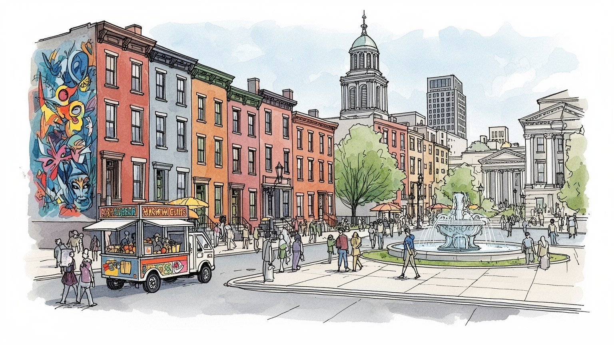
フィラデルフィアは北東回廊の中間にあり、ニューヨークとワシントンを結ぶ鉄道、港、大学、歴史観光が交差する。州都ではないが建国の記憶を背負い、民主主義を語る米国の公共舞台である。選挙と市民運動の熱も強い。
大学病院、生命科学、港湾物流、食品、金融、観光、行政サービスが雇用を作る。高技能の研究職と、看護、介護、清掃、倉庫、配達、飲食の現場労働が近接し、賃金差も街に表れる。組合の記憶も残る職住の街である。
クエーカーの寛容、カトリック教区、黒人教会、移民の礼拝所、音楽、壁画、食市場が重なる。建国史だけでなく、奴隷制、解放、移住、労働運動の記憶が街路に残る都市である。祭礼も地区を結ぶ生活文化だ。食も強い。
独立記念館や旧市街は歩きやすいが、住宅の老朽化、貧困、学校格差、治安不安も深い。市場、大学街、川辺、球場、壁画を巡る観光の明るさと、住民の日常課題が同じ街にある。生活の差も見える現実の街だ。家賃も重い。
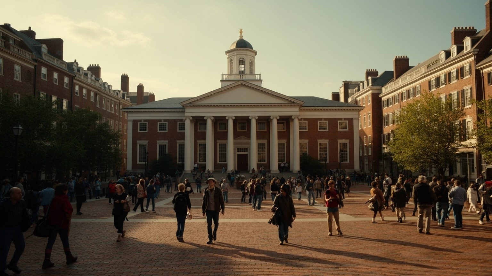
フィラデルフィアはアメリカ独立の記憶を都市の中心に抱える。独立記念館、リバティベル、古い議事堂、石畳の街路は、観光名所であると同時に、共和国の理念を日常的に演出する公共空間である。だが建国の物語は単純な祝祭ではない。自由、代表、権利を語る場所の近くに、奴隷制、先住民の排除、移民差別、貧困、政治的対立の歴史も重なる。修学旅行生や海外観光客が歩く歴史地区は、国家が自分をどう説明するかを示す舞台であり、展示の言葉、記念碑の配置、警備、土産物、ガイドの語り方が現在の価値観を映す。フィラデルフィアの重要性は、過去を保存していることだけではなく、過去の矛盾をめぐる議論が今も街路で続く点にある。独立の記憶は市民の誇りを支えるが、同時に誰が市民として扱われてきたのかを問い直す力も持つ。歴史地区を読むことは、アメリカの民主主義が美しい理念と不完全な実践の間で作られてきたことを確かめる作業である。式典や記念日は国旗を掲げる場になるが、抗議集会や投票運動も同じ広場を使う。観光と政治が近い距離で重なるため、この街の歴史は過去の展示物ではなく、現在の市民が権利を主張する言葉として働き続けている。警備された芝生と日常の歩道が隣り合う配置も、国家の物語が都市生活の中で管理され、使われ、時に争われることを示している。
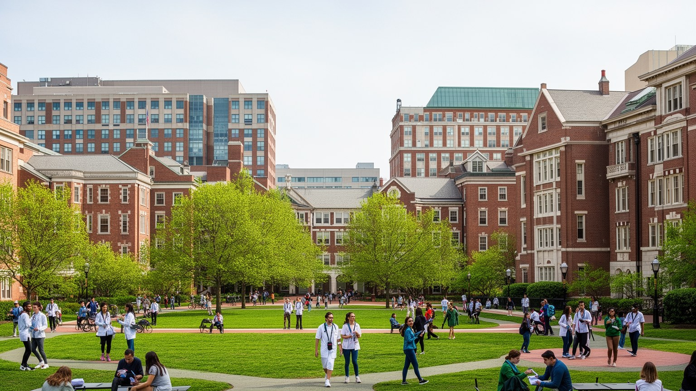
フィラデルフィアの現代経済で最も大きな柱は大学と医療である。ペンシルベニア大学、ドレクセル大学、テンプル大学、ジェファーソン系の医療機関、研究病院、生命科学企業が集まり、医師、看護師、研究者、学生、技術職、清掃、給食、警備、事務の仕事を生み出す。大学病院は高度な治療と研究資金を呼び込む一方、周辺の家賃、土地利用、雇用条件にも強い影響を与える。学生と患者は都市を外へ開くが、医療費、保険、救急体制、地域診療へのアクセスは住民の暮らしを左右する。キャンパス拡張は荒廃した土地を再利用することもあるが、長く住む世帯や小商店を押し出すこともある。知識産業の都市を読むには、研究成果や病院ランキングだけでなく、夜勤の看護師、実験室の技術員、学生ローンを抱える若者、近隣住民との約束を見る必要がある。大学と医療はフィラデルフィアの強みだが、その公共性は地域にどれだけ還元されるかで測られる。救急車が走る大通り、研究棟の建設現場、学生向け住宅、地域診療所は同じ都市システムの一部である。知識と医療が富を生むほど、健康格差を縮める責任も大きくなる。奨学金、無料診療、雇用の地域採用、周辺学校との連携は、巨大機関が近隣と信頼を結ぶための実務である。病院の食堂やバス停にも、都市経済を支える無数の通勤が集まる日々がある。
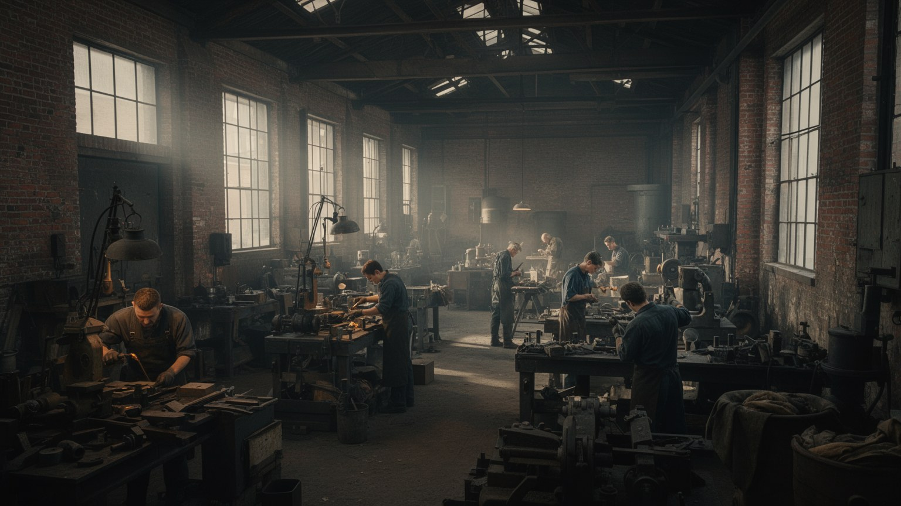
フィラデルフィアは金融や医療だけの都市ではなく、製造業と港湾労働の記憶を持つ都市である。デラウェア川沿いの埠頭、鉄道、倉庫、造船、食品加工、化学、印刷、製薬は、長い間この地域の雇用と移民の生活を支えてきた。脱工業化で工場は閉鎖され、労働組合の力は弱まり、空き地や荒れた建物が残ったが、近年は物流、医療用品、食品、建設、クラフト産業、再開発が別の形で土地を使っている。港の仕事は国際貿易と結び、倉庫や配送は電子商取引を支えるが、賃金、労災、夜勤、通勤、環境負荷の問題も抱える。古い工場街が住宅やオフィスへ変わる時、都市はきれいに見えるが、そこで働いていた人びとの記憶は薄れやすい。フィラデルフィアの産業を読むには、中心部の高層ビルだけでなく、川沿いのフェンス、貨物線、労働者住宅、組合の会館、早朝のバス停を見る必要がある。経済の転換は景観を変えるだけでなく、家族の職業選択と地域の誇りを変えていく。技能訓練、最低賃金、公共交通、環境規制がそろわなければ、新しい雇用も不安定な仕事にとどまる。産業都市の再生は建物の再利用だけではなく、働く人が将来を描ける条件を作ることでもある。倉庫の増加は道路混雑や大気汚染も招くため、産業政策は雇用数だけでなく、健康と生活環境まで含めて判断される。古い作業着と新しい配送制服が同じ街で交差している。
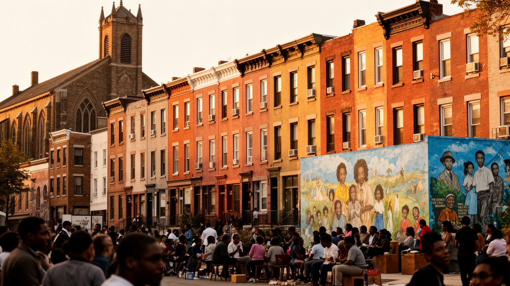
フィラデルフィアはアメリカ黒人史を考えるうえで重要な都市である。自由黒人のコミュニティ、地下鉄道運動、黒人教会、教育、新聞、音楽、労働運動、公民権運動は、建国の記憶とは別の自由の系譜を街に刻んできた。南部からの大移動によって多くの黒人世帯が移り住み、工場、港湾、家庭労働、公共サービス、芸術、政治の場で都市を支えた。しかし住宅差別、赤線引き、学校格差、警察との緊張、薬物問題、失業、健康格差は深く、自由の都市という言葉だけでは説明できない現実がある。黒人教会や地域組織は信仰の場であると同時に、相互扶助、教育、投票、抗議、葬送の中心でもあった。音楽や詩、壁画、店、理髪店、フードカルチャーは、困難の中で地域の尊厳を作ってきた。フィラデルフィアを読む時、独立宣言の物語と黒人市民の長い闘いを切り離してはならない。誰に自由が約束され、誰がそれを求め続けたのかを追うことで、都市の民主主義はより具体的に見えてくる。投票所、学校区、裁判所、追悼行進、地域ラジオは、自由が制度と生活の両方で争われる場所である。黒人史は過去の章ではなく、都市の現在を理解する中心線であり続けている。博物館の展示だけでなく、家族の写真、教会の掲示、街角の追悼が記憶を支えている。若者の進学、起業、芸術活動も、この長い歴史を受け継ぎながら新しい都市像を作っている。
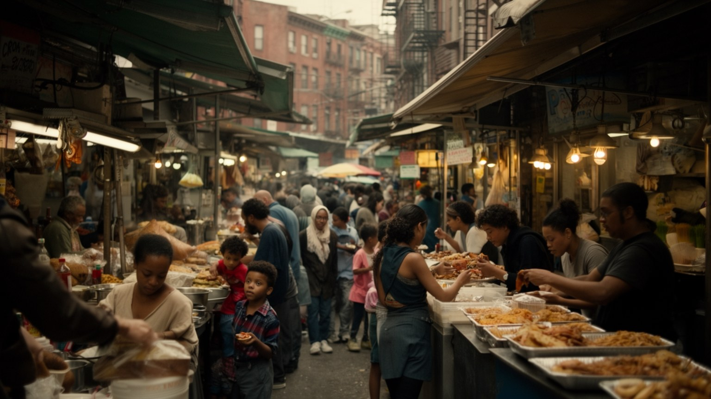
フィラデルフィアの食文化は、有名なサンドイッチだけで語りきれない。イタリア系市場、アイルランド系の教区、ユダヤ系の商店、ポーランド系や東欧系の移民、プエルトリコ系、メキシコ系、ベトナム系、カンボジア系、中国系、韓国系、西アフリカ系の食堂や食料品店が、地区ごとに異なる匂いと時間を作る。市場は観光地であると同時に、家族経営、仕入れ、移民労働、言語、送金、宗教行事、学校帰りの買い物が交差する生活の場所である。食は都市の多様性を楽しく見せるが、厨房の労働条件、家賃上昇、営業許可、移民の在留不安は見えにくい。新しい店が注目されると地区の魅力は増すが、その人気が家賃を押し上げ、昔からの住民を追い出すこともある。フィラデルフィアの食を読むことは、味の比較ではなく、移民がどのように土地を借り、家族を養い、言語を混ぜ、近隣に居場所を作ってきたかを見ることである。食卓は都市の寛容さを示す一方、誰がその街に住み続けられるのかという問いも運んでいる。学校の昼食、教会のバザー、深夜営業の店、週末の市場には、観光地化されない生活の味がある。食は記憶を運び、家族の移動史を次の世代へ渡す都市の言語でもある。店先の列や厨房の会話には、英語だけではない都市のリズムが流れ、近隣の地図を毎日少しずつ変えている。小さな食堂は、移民が都市に根を張るための最初の公共空間にもなる。
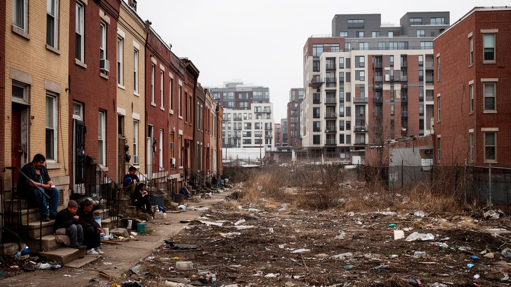
フィラデルフィアの日常を理解するには、連棟住宅と貧困の問題を避けられない。赤レンガのロウハウスは街の象徴であり、近隣の密度、玄関前の会話、路地、学校、教会、小商店を支えてきた。一方で、老朽化した住宅、鉛塗料、断熱不足、空き家、差し押さえ、家賃負担、ホームレス、薬物依存、銃暴力は多くの地区で深刻である。近年は中心部や大学周辺、交通の便利な地区で再開発が進み、空き地が集合住宅や店舗へ変わるが、資産価値の上昇は長く住む世帯の税負担や家賃を押し上げる。住宅政策は建物の供給だけでなく、修繕支援、公共住宅、学校、治安、交通、医療、仕事へのアクセスと結びついている。古い街区を美しく見せる写真だけでは、暖房費を払えない家族や退去通知を受けた住民の不安は見えない。フィラデルフィアの公平さは、歴史地区の保存ではなく、普通の所得の人が安全で健康な家に住めるかで試される。都市の魅力が増すほど、住まいを守る制度の重さも増している。家の修繕費、固定資産税、保険料、通学区域は、家族の未来を具体的に左右する。住宅は資産である前に、健康、教育、近隣関係を支える生活の土台である。空き家対策や修繕補助が弱ければ、街区の荒廃は防犯や学校運営にも波及する。住まいは都市福祉の入口である。玄関前の階段や細い路地に、支え合いと困窮が同時に現れる。
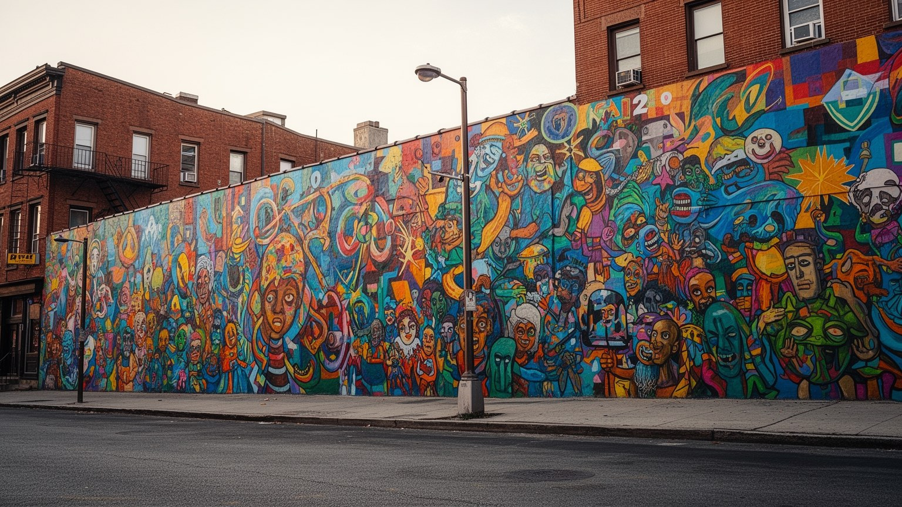
フィラデルフィアは壁画の都市として知られる。建物の側面、学校、商店街、空き地の縁、鉄道沿いに描かれた公共芸術は、観光名物であるだけでなく、地域の記憶を可視化する手段になっている。壁画には黒人史、移民の物語、労働、音楽、教育、追悼、環境、子どもの夢が描かれ、住民が自分の地区をどう見たいのかを示す。公共芸術は荒廃した壁を明るくし、参加型の制作は若者の居場所にもなるが、同時に再開発の前触れとして使われることもある。きれいな壁画が不動産価値を上げ、低所得者を遠ざけるなら、芸術は包摂と排除の両方に関わる。落書きと公共芸術の境界、誰が制作を依頼し、誰の顔が描かれ、誰が管理費を出すのかも重要である。フィラデルフィアの壁画を読むことは、都市が自分の傷や誇りをどのように公共の色へ変えるかを見ることである。美しい絵の前で立ち止まる時、その背後には学校、地域団体、アーティスト、亡くなった住民、変わりゆく家賃の現実が重なっている。壁画は無料で出会える美術館であり、同時に住民の合意を必要とする近隣政治でもある。色彩が街を明るくするほど、その絵が誰のために描かれたのかを問う目も必要になる。修復される絵と消えていく絵の差にも、都市が何を記憶として選ぶかが表れる。歩く速度で見える芸術だからこそ、壁画は観光と生活を近づける。
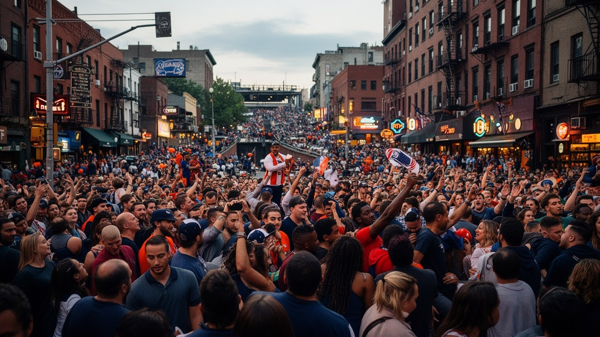
フィラデルフィアのスポーツ文化は、単なる娯楽ではなく都市の感情を集める儀礼である。イーグルス、フィリーズ、セブンティシクサーズ、フライヤーズの試合日は、地下鉄、駐車場、バー、家庭、職場、学校の会話を一斉に変える。勝敗への反応は時に荒く、外からは激しいファン気質として語られるが、その根には労働者都市としての誇り、負け続けた時代の記憶、地区への帰属、家族で受け継ぐ応援がある。スタジアム地区は交通、警備、清掃、飲食、放送、グッズ販売を動かす経済装置であり、同時に公共投資やチケット価格をめぐる議論の場でもある。スポーツは人種や階層を越えて一体感を作ることがある一方、高額化すれば地元住民を観客席から遠ざける。フィラデルフィアを読むには、試合結果だけでなく、試合前の屋台、地下鉄の混雑、清掃員、若者の地域リーグ、女性ファン、移民の応援文化を見る必要がある。スポーツは都市の怒りと愛着を同時に表す、週末ごとの公共言語である。優勝パレードは中心部を祝祭空間に変えるが、敗北の後も応援は地区の会話に残る。学校の体育館や公園のコートまで含めて見ると、スポーツは世代をつなぐ都市の習慣である。応援の熱は商業化に取り込まれやすいが、近所の店や家族の台所にも残る。テレビ中継の夜には、遠く離れた出身者も同じ都市感情へ戻ってくる。
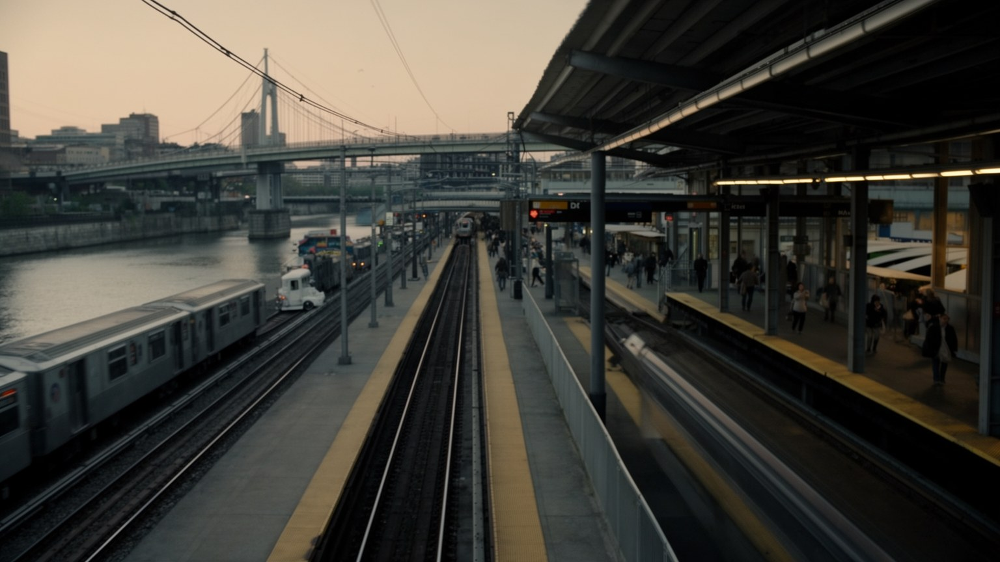
フィラデルフィアの位置は、北東回廊の中で大きな意味を持つ。ニューヨークとワシントンの間にあり、鉄道、高速道路、空港、港湾、近郊鉄道が都市圏の仕事と生活をつないでいる。セプタの地下鉄、トロリー、バス、地域鉄道は、通勤、通学、通院、買い物、観光の基盤だが、運賃、治安、老朽化、遅延、バリアフリー、郊外とのサービス格差が課題になっている。中心部で働く人だけでなく、夜勤の病院職員、倉庫労働者、学生、高齢者、車を持たない世帯にとって、交通は都市に参加する条件である。アムトラックの駅は都市を全国的な移動網に載せ、空港と港は国際的な流れを取り込むが、地域内の移動が不便なら成長の恩恵は偏る。フィラデルフィアの交通を読むことは、都市圏の不平等を読むことでもある。雇用が郊外へ広がり、住宅が再開発で高くなるほど、安く確実な移動の価値は増す。駅とバス停の状態は、公共サービスが誰の時間を大切にしているかを示している。自転車レーンや歩道の整備も、事故を減らし、短い移動を楽にする生活政策である。北東回廊の大都市でありながら、最後の一マイルが弱ければ、都市の近さは住民の負担へ変わる。駅前の明るさ、屋根、案内、エレベーターの有無は、移動の尊厳を左右する細部である。交通投資は観光客の便利さだけでなく、毎日同じ路線を使う住民の時間を取り戻す政策である。
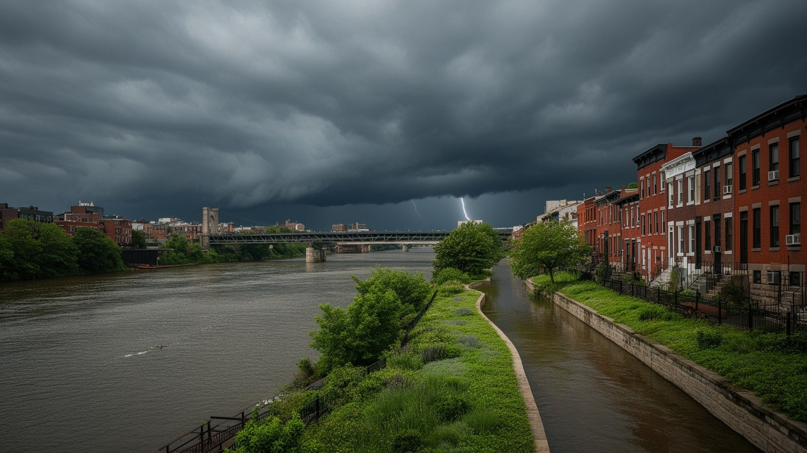
フィラデルフィアはデラウェア川とスクーカル川に抱かれた都市である。川は植民地時代の港、工業、橋、鉄道、物流、余暇を支えてきたが、同時に洪水、水質汚染、高潮、熱波への脆さも示す。川辺の再開発は公園、遊歩道、住宅、オフィスを生み、都市の魅力を高める一方、低地の地区や古い排水設備、工業跡地の汚染は気候変動の時代に大きなリスクになる。夏の湿気と暑さは高齢者、低所得世帯、冷房を持たない住民に重く、街路樹や公園、冷却センター、住宅の断熱は健康政策でもある。水辺を美しく整えるだけでは、洪水保険、避難、下水、緑地の維持、環境正義の問題は解けない。フィラデルフィアの川を読むには、観光用の眺めと、排水口、倉庫、橋脚、釣り人、工場跡、暑い日のバス停を同時に見る必要がある。都市の未来は、川を背にした開発ではなく、川とともに暮らす制度を作れるかにかかっている。気候への備えは景観整備ではなく、命を守る都市福祉である。雨水を地面に戻す緑地、樹冠の少ない地区への植樹、古い住宅の断熱改修は、派手ではないが重要な対策になる。川のある都市は、水の恵みと危険を同時に管理しなければならない。暑い日の公園や水辺への近さは、余暇ではなく健康を守る資源として重みを増している。川風を受ける景観の快さは、排水と避難の実務に支えられている。
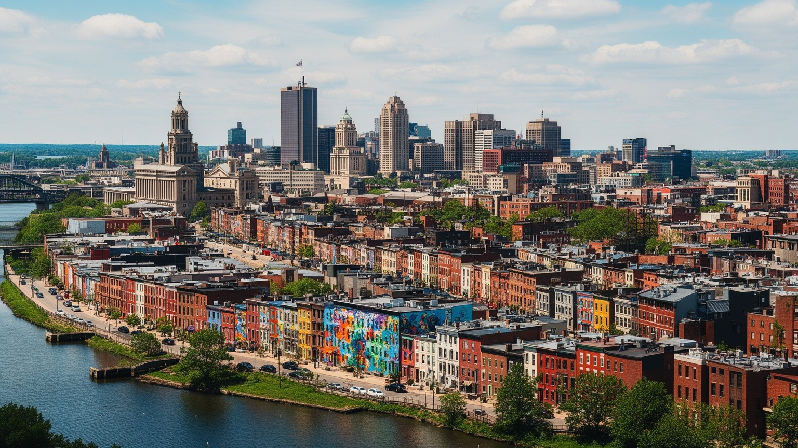
フィラデルフィアを読むことは、建国の象徴としての明るい表情と、住民の日常が抱える不平等を同時に見ることである。独立記念館、古い街路、博物館、大学、病院、市場、壁画、球場、川辺は、都市の魅力を分かりやすく示す。しかしその背後には、脱工業化で失われた雇用、黒人コミュニティの長い闘い、移民労働、住宅の老朽化、学校格差、交通の不便、薬物問題、気候リスクがある。フィラデルフィアの強さは、歴史を観光資源にするだけでなく、大学医療、地域組織、芸術、食、スポーツを通じて街を更新し続ける点にある。一方で、再開発が進むほど、誰が中心部の近くに住み、誰が都市の便利さから遠ざけられるのかという問いは鋭くなる。自由の都市という言葉は、過去の理念を称えるだけでなく、現在の住民が安全な住まい、医療、教育、移動、表現の場を持てるかで試される。観光客にも住民にも、フィラデルフィアはアメリカの約束と未完の課題を同じ街路で見せる都市である。だから街の価値は、鐘や記念館だけではなく、バス停、診療所、学校、壁画のある角、古い連棟住宅にも現れる。歴史と生活を重ねて見るほど、この都市はアメリカ社会の縮図として立ち上がる。豊かさ、記憶、痛み、誇りが近い距離で並ぶことこそ、フィラデルフィアの都市としての厚みである。訪れる人が歩く数時間と、住民が積み重ねる毎日は、同じ街を違う角度から照らしている。